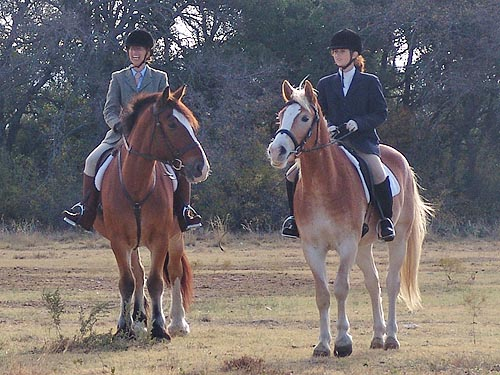
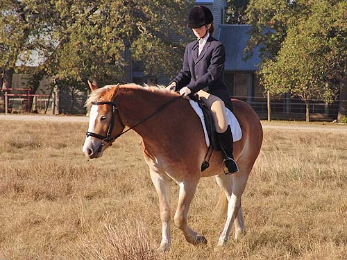
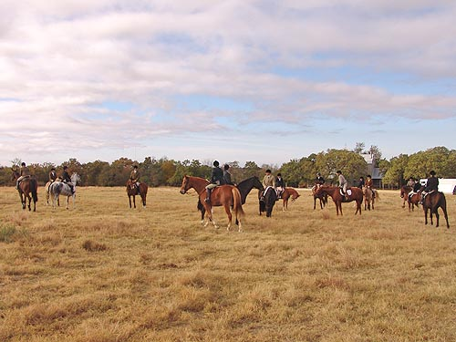
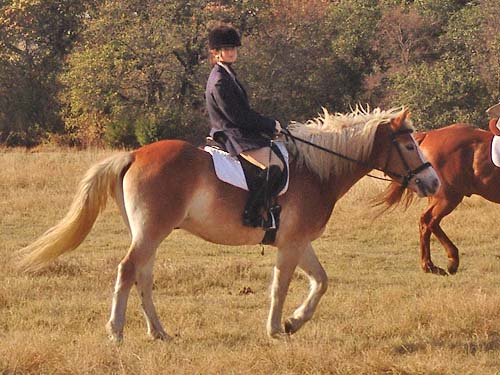
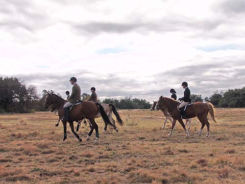
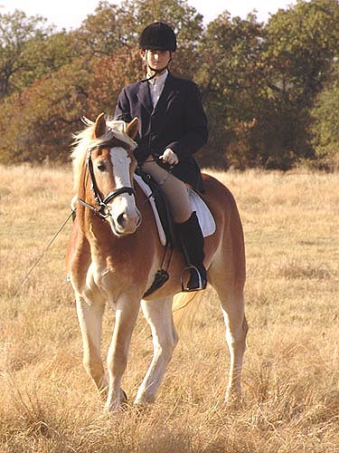
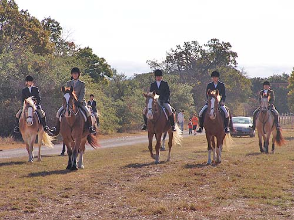
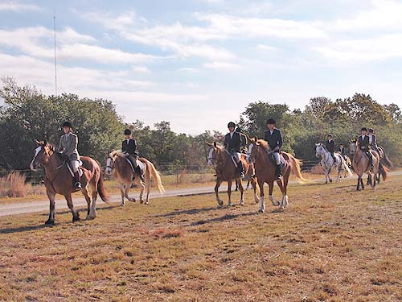

Adirondack NTF -
Fox Hunting Adiron got to be a part of the field
this weekend out fox hunting.
He kept his ears and eyes on the hounds,
but
no kicking and he happily joined in for
some
trotting and cantering. He was one tired
Haflinger
when they got back, but he was still forward
and happy to
pick up a trot heading in to the trailers.

Adiron trailered out with Kasza. That's
Jennifer up on Kasza to lead the hilltoppers and Lydia (who showed Adamir
a few years ago) up on Adiron. He's not quite as tall as Kasza, but he
does feel like a big 'little' horse.

A little walking around after mounting
up. Lydia had never ridden Adiron, so she needed to get used to the feel
of him before heading out.

A lot of horses out this weekend.
I think Adiron is towards the right hidden behind a chestnut.

Lydia practiced taking him away from
Kasza. That ended up being very good practice since Lydia ended up riding
on while Jennifer helped out another rider.

It was a cold and windy day. Most
of the horses were quite 'up'. Adiron didn't always want to stand still
at the start, but he settled in quickly.

The cutest thing ever. He was a perfect
color match for the dried fields...

A field of Jennifer's horses.
That's Adiron on the left, then Kasza,
then Angel and Wiley with their new owners. Thuy was already up ahead with
the First Flight....
Adiron was probably the shortest and
youngest. He also relaxed, enjoyed himself and handled the hunt like a
much older horse.

Of course a number of these pictures
will also be on Kasza's page. She didn't worry about the group behind her
and didn't need a lead while we were out.